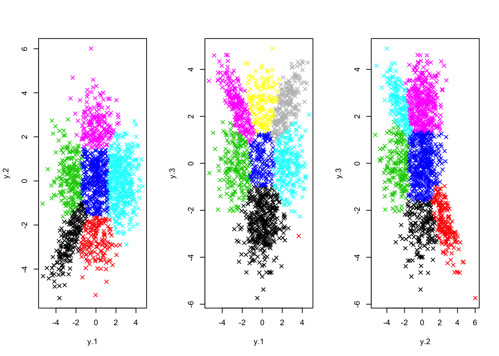
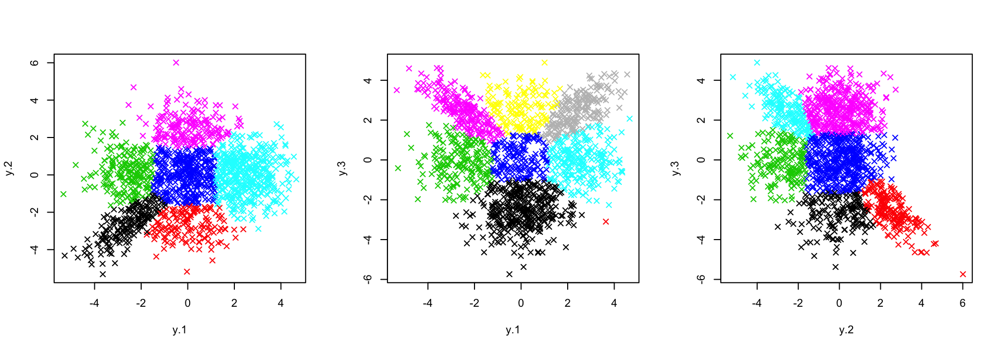

Last updated: 2021-04-17
Checks: 4 3
Knit directory: lieb/
This reproducible R Markdown analysis was created with workflowr (version 1.6.2). The Checks tab describes the reproducibility checks that were applied when the results were created. The Past versions tab lists the development history.
The R Markdown file has unstaged changes. To know which version of the R Markdown file created these results, you'll want to first commit it to the Git repo. If you're still working on the analysis, you can ignore this warning. When you're finished, you can run wflow_publish to commit the R Markdown file and build the HTML.
Great job! The global environment was empty. Objects defined in the global environment can affect the analysis in your R Markdown file in unknown ways. For reproduciblity it's best to always run the code in an empty environment.
The command set.seed(20190717) was run prior to running the code in the R Markdown file. Setting a seed ensures that any results that rely on randomness, e.g. subsampling or permutations, are reproducible.
To ensure reproducibility of the results, delete the cache directory pairwise_fitting_cache and re-run the analysis. To have workflowr automatically delete the cache directory prior to building the file, set delete_cache = TRUE when running wflow_build() or wflow_publish().
Great job! Using relative paths to the files within your workflowr project makes it easier to run your code on other machines.
Great! You are using Git for version control. Tracking code development and connecting the code version to the results is critical for reproducibility.
The results in this page were generated with repository version e0a34e8. See the Past versions tab to see a history of the changes made to the R Markdown and HTML files.
Note that you need to be careful to ensure that all relevant files for the analysis have been committed to Git prior to generating the results (you can use wflow_publish or wflow_git_commit). workflowr only checks the R Markdown file, but you know if there are other scripts or data files that it depends on. Below is the status of the Git repository when the results were generated:
Ignored files:
Ignored: .DS_Store
Ignored: .Rhistory
Ignored: .Rproj.user/
Ignored: analysis/.DS_Store
Ignored: analysis/.Rhistory
Ignored: analysis/pairwise_fitting_cache/
Ignored: analysis/preprocessing_cache/
Ignored: analysis/running_mcmc_cache/
Ignored: data/.DS_Store
Ignored: data/.Rhistory
Ignored: output/.DS_Store
Unstaged changes:
Modified: analysis/candidate_latent_classes.Rmd
Modified: analysis/downstream.Rmd
Modified: analysis/pairwise_fitting.Rmd
Modified: analysis/preprocessing.Rmd
Modified: analysis/priors.Rmd
Modified: analysis/running_mcmc.Rmd
Note that any generated files, e.g. HTML, png, CSS, etc., are not included in this status report because it is ok for generated content to have uncommitted changes.
These are the previous versions of the repository in which changes were made to the R Markdown (analysis/pairwise_fitting.Rmd) and HTML (docs/pairwise_fitting.html) files. If you've configured a remote Git repository (see ?wflow_git_remote), click on the hyperlinks in the table below to view the files as they were in that past version.
| File | Version | Author | Date | Message |
|---|---|---|---|---|
| html | 605e442 | hillarykoch | 2021-04-17 | Build site. |
| Rmd | a493056 | hillarykoch | 2021-04-17 | update site to match gigantum submission |
| html | dd0b829 | hillarykoch | 2020-10-15 | replace cache |
| Rmd | 3d86b68 | hillarykoch | 2020-04-24 | clean up pairwise fitting page |
| html | 3d86b68 | hillarykoch | 2020-04-24 | clean up pairwise fitting page |
| Rmd | cc98d2b | hillarykoch | 2020-04-24 | replace cache and update to describe flex_mu |
| html | cc98d2b | hillarykoch | 2020-04-24 | replace cache and update to describe flex_mu |
| html | 828e725 | hillarykoch | 2020-04-23 | add a preprocessing section |
| html | c5fd6fc | hillarykoch | 2020-04-23 | change nav bar to accomodate a menu |
| Rmd | 52823b2 | hillarykoch | 2020-03-07 | add flex mu |
| html | 52823b2 | hillarykoch | 2020-03-07 | add flex mu |
| html | 7c42345 | hillarykoch | 2020-02-20 | Build site. |
| html | 2a5b7c0 | hillarykoch | 2020-02-20 | Build site. |
| html | 3a9bf9d | hillarykoch | 2020-02-20 | Build site. |
| html | 72e6fec | hillarykoch | 2020-02-20 | Build site. |
| Rmd | 862bc02 | hillarykoch | 2020-02-07 | big updates for mcmc processors |
| html | 862bc02 | hillarykoch | 2020-02-07 | big updates for mcmc processors |
| html | 8b3e556 | hillarykoch | 2019-12-03 | Build site. |
| html | 39383ac | hillarykoch | 2019-12-03 | Build site. |
| Rmd | 645d408 | hillarykoch | 2019-12-03 | workflowr::wflow_publish(files = "*") |
| html | e467a51 | hillarykoch | 2019-08-16 | different shiny location |
| html | d58e1a6 | hillarykoch | 2019-08-16 | resource data |
| html | 38fb1c0 | hillarykoch | 2019-08-16 | edit shiny |
| html | 228123d | hillarykoch | 2019-07-17 | update up to obtaining the hyperparameters |
| html | c1dc0c1 | hillarykoch | 2019-07-17 | update up to obtaining the hyperparameters |
| html | 674120c | hillarykoch | 2019-07-17 | update about page |
| html | e67a3a2 | hillarykoch | 2019-07-17 | update about page |
| Rmd | 2faf446 | hillarykoch | 2019-07-17 | update about page |
| html | 2faf446 | hillarykoch | 2019-07-17 | update about page |
| html | da65141 | hillarykoch | 2019-07-17 | update about page |
| Rmd | 8278253 | hillarykoch | 2019-07-17 | update about page |
| html | 2177dfa | hillarykoch | 2019-07-17 | update about page |
| Rmd | 8b30694 | hillarykoch | 2019-07-17 | update about page |
| html | 8b30694 | hillarykoch | 2019-07-17 | update about page |
| Rmd | e36b267 | hillarykoch | 2019-07-17 | update about page |
| html | e36b267 | hillarykoch | 2019-07-17 | update about page |
| html | a991668 | hillarykoch | 2019-07-17 | update about page |
| html | a36d893 | hillarykoch | 2019-07-17 | update about page |
| html | e8e54b7 | hillarykoch | 2019-07-17 | update about page |
| html | f47c013 | hillarykoch | 2019-07-17 | update about page |
| Rmd | 50cf23e | hillarykoch | 2019-07-17 | make skeleton |
| html | 50cf23e | hillarykoch | 2019-07-17 | make skeleton |
Here, we describe how to execute the first step of CLIMB: pairwise fitting (a composite likelihood method).
First, load the package and the simulated dataset. This toy dataset has \(n=1500\) observations across \(D=3\) conditions (that is, dimensions). Thus, we need to fit \(\binom{D}{2}=3\) pairwise models.
# load that package
library(CLIMB)
# load the toy data
data("sim")The fitting of each pairwise model can be done in parallel, which saves a lot of computing time when the dimension is larger. This can be done simply (in parallel, or linearly) with the function get_pairwise_fits(). Note that the input data should be \(z\)-scores (or data arising from some other scoring mechanism, transformed appropriately to \(z\)-scores).
get_pairwise_fits() runs the pairwise analysis at the default settings used in the CLIMB manuscript. The user can select a few settings with this functions:
nlambda: how many tuning parameters to try (defaults to 10)
parallel: logical indicating whether or not to do the analysis in parallel
ncores: if in parallel, how many cores to use (defaults to 10)
bound: is there a lower bound on the estimated non-null mean? (defaults to zero, and must be non-negative)
flex_mu: should we loosen restrictions on the mean in the pairwise fitting (defaults to FALSE, best used in conjunction with bound)?
With all of this in place, one can obtain the pairwise fits as follows:
fits <- get_pairwise_fits(z = sim$data, parallel = FALSE)Calling names(fits) tells us which pair of dimensions each fit belongs to.
names(fits)[1] "1_2" "1_3" "2_3"It is advisable to take a look at the pairwise fitting output before proceeding, just to make sure things have gone ok so far.
axis_names <- names(fits) %>% stringr::str_split("_")
par(mfrow = c(1,3))
purrr::map2(.x = fits, .y = axis_names,
~ plot(sim$data[, as.numeric(.y)], col = .x$cluster, pch = 4))
The default settings of get_pairwise_fits() are generally sufficient for analysis. However, it makes some modeling assumptions which can be relaxed. Namely, if one wants a slightly more flexible model based on estimation of cluster means, one could instead run the following:
# bound = qnorm(0.9) says that the magnitude of the estimated cluster means
# (for clusters whose mean is non-zero) must be at least the 90% quantile
# of a standard normal distribution
flexible_fits <-
get_pairwise_fits(
z = sim$data,
parallel = FALSE,
flex_mu = TRUE,
bound = qnorm(0.9)
)This change is sometimes desirable in cases where the data are highly skewed. It is recommended to set some positive bound when flex_mu=TRUE. If not, one is likely to underestimate the true number of clusters. We can see that, in this case, classification appears similar to the previous version with flex_mu=FALSE and bound=0.
axis_names <- names(flexible_fits) %>% stringr::str_split("_")
par(mfrow = c(1,3))
purrr::map2(.x = flexible_fits, .y = axis_names,
~ plot(sim$data[, as.numeric(.y)], col = .x$cluster, pch = 4))
Each fit contains additional information, including the length-2 association patterns estimated to be in the given pairwise fit, the posterior probability of each observation belonging to each of these classes, and their corresponding estimated means and covariances.
Finally, save this output, as it is necessary for many parts of the downstream analyses, before moving on to the next step.
save(fits, file = "pwfits.Rdata")